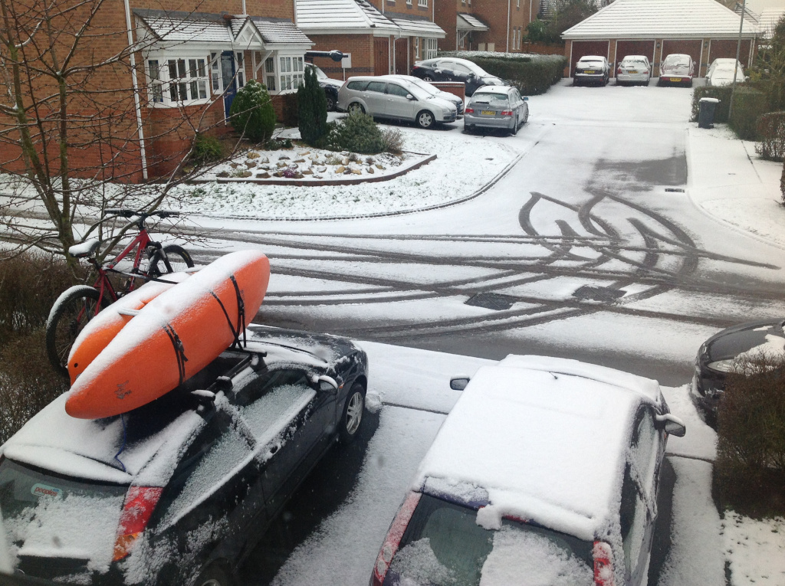
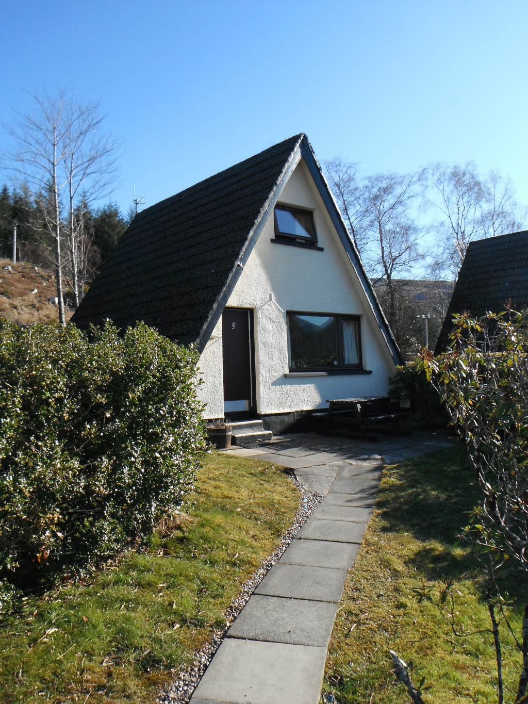
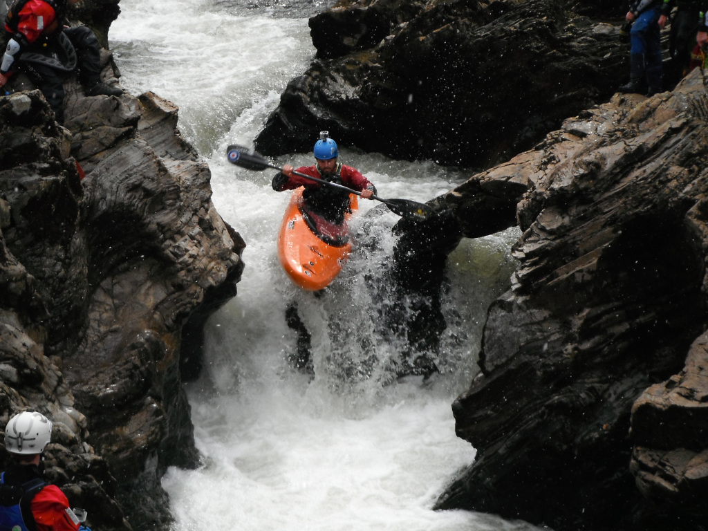
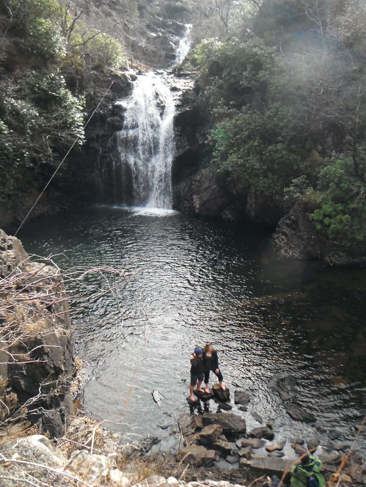
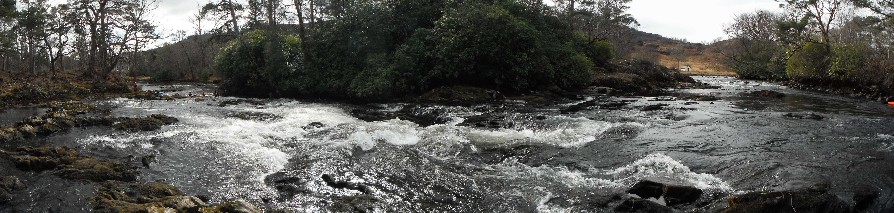
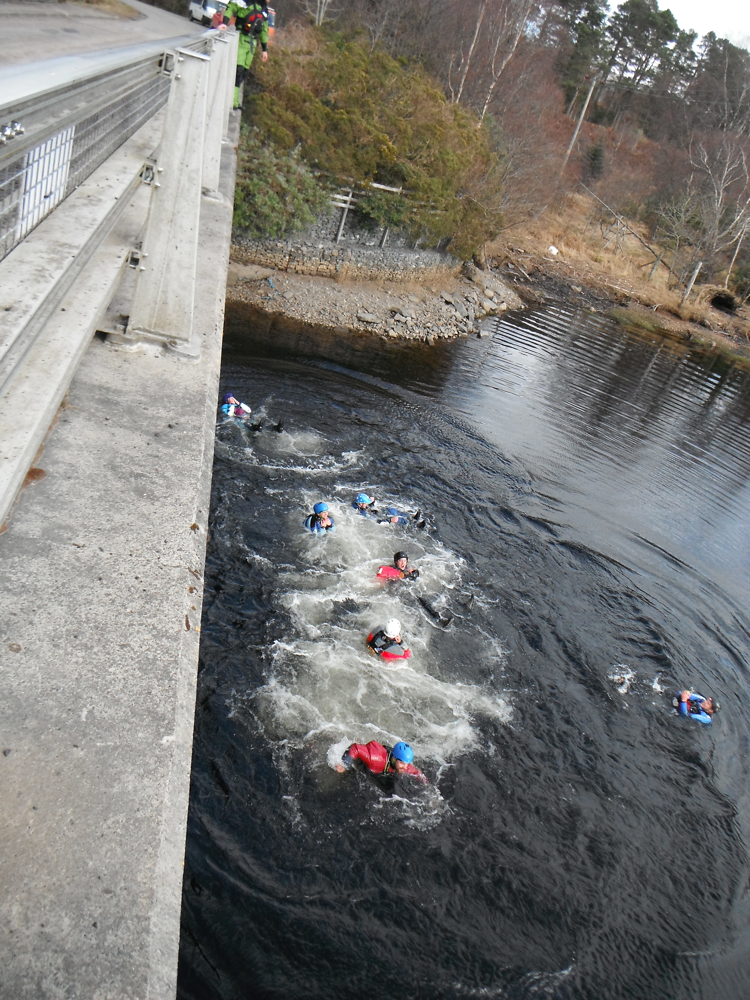
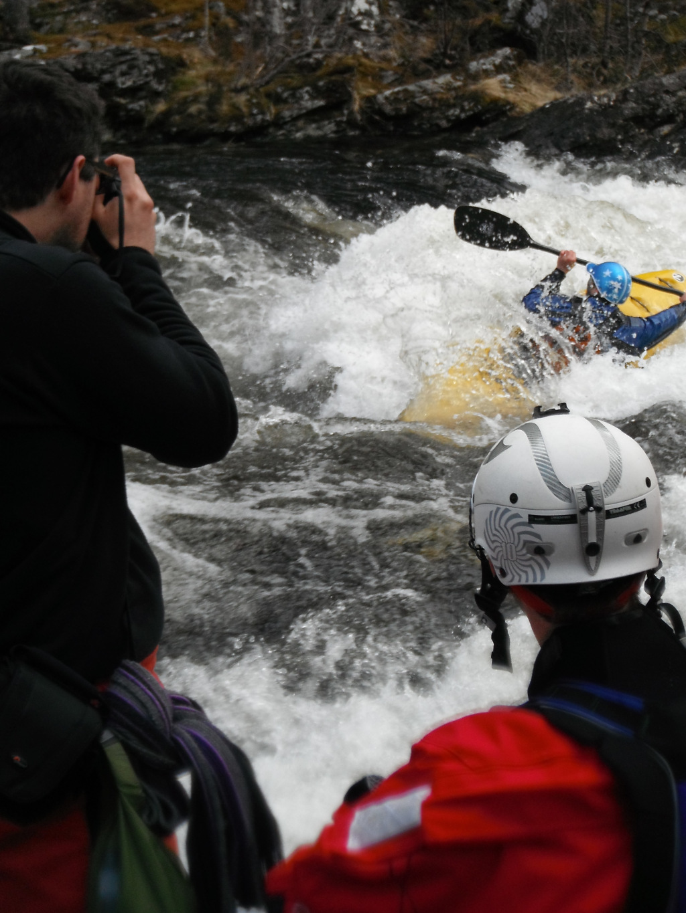
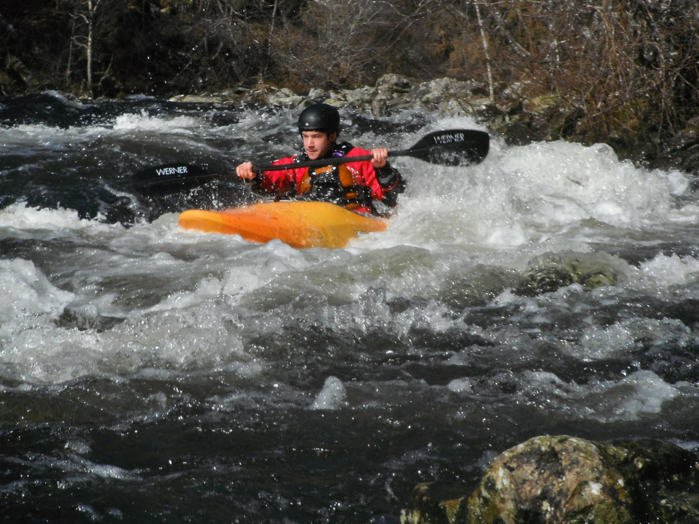
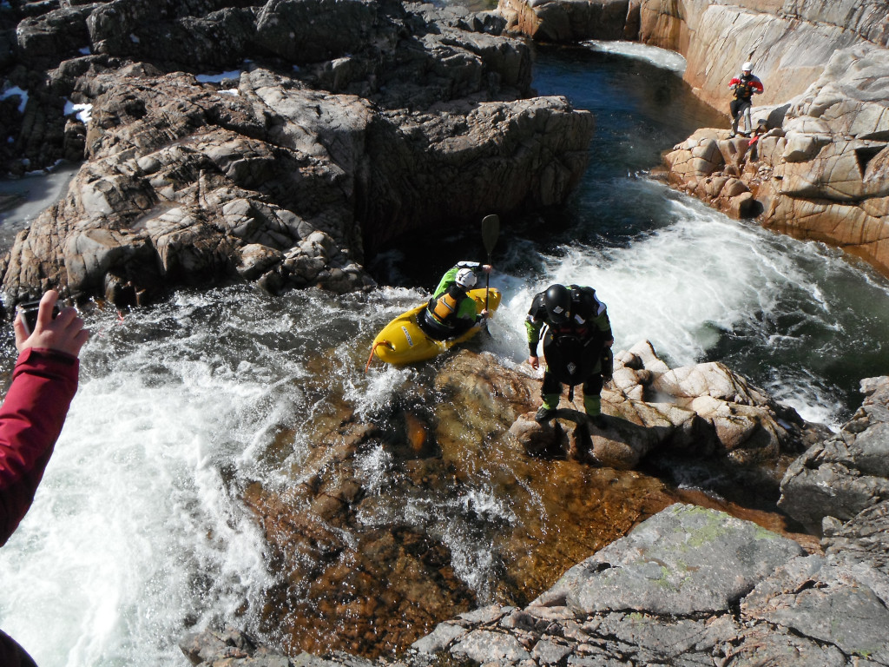

This last week I have been in the Fort William area with the university of Surrey Canoe Club, for a week of white water paddling. Despite Fort William being known for giving reliable white water we managed to pick the time of year were there was no rain, and only snow!

The journey up to Fort William had been a battle, with the country being hit by large snowfall and high wind warning along almost the entire route, but all the vehicles managed to make it along the A82 without incident, unlike many cars that were seen along the way.

We stayed near the Inchree Chalets, not far outside fort william, with 3 of them rented for the group.
Sunday

Despite being warned of the low water, we were hopeful that at least some of the rivers would run, but it was today that we realized just how little water was going to be about, unless we got some more rain. The first river we tried was the Spean Gorge Section, which should be runnable in most levels, but as we soon found out most levels doesn’t include as low as this. Many sections that we would have expected to find features were none existent, and some not even passable, with the portage becoming a way of life. This is also before you coincided the long flat water scrape back to the vehicles.
Monday

With the lack of water the day before, instead of heading of kayaking most of the group went for a walk to look at the Inchree Falls that were located close to the bunkhouse. With much of the group going for an explore around the falls which have been run a handful of times, followed by a number of people scaling a nearby hill, to see the view, and the snow.
Tuesday

With the group not managing to get on the water the day before, we decided to give the Arkaig a go, this river runs between 2 lochs, but even this does not guarantee there will be any water. The river was found to be runnable, if not completely different to how it would be normally.

Most of the group ran the main rapid multiple times, making use of the water and the short walk back up. At the get off to the river is a bridge going over the loch, which many people may have jumped off.

Wednesday
Not for the first time this week we found the lack of water an issue, so a number of the group decide to go and make use of another form of white water up in Glencoe, and go skiing instead. With the remainder of the group taking a walk up the River Nevis in the afternoon.
Thursday
Today we had some guaranteed water in the form of the first dam release of the year on the River Garry. This made a welcome break from the rest of the week were the group were able to paddle without scraping along the rocks like previous rivers.

When we arrived at the get on the river was quiet and the water was still rising, but it didn’t take long for the river level to have risen and the car park to have been filled. The river had large numbers of groups, making the most of the release to get out paddling with a number of university groups around.

Following on from a good few runs we heading to the Moriston to see what the levels looked like up there, but the lack of water was easy to see.
Friday

For the first day of the week the river level in the Etive had picked up enough to make it worth a fun, so the group decided to jump on for a run while they could. Triple Falls had enough water to fall over, along with a scrap through bits in between that the group was able to run.

All this was enough to ensure that people got some photos of them falling over right angle falls before the final day.
Now the university group head backs to Guildford, but i’ve got another week of waiting for the rain gods to provide some water